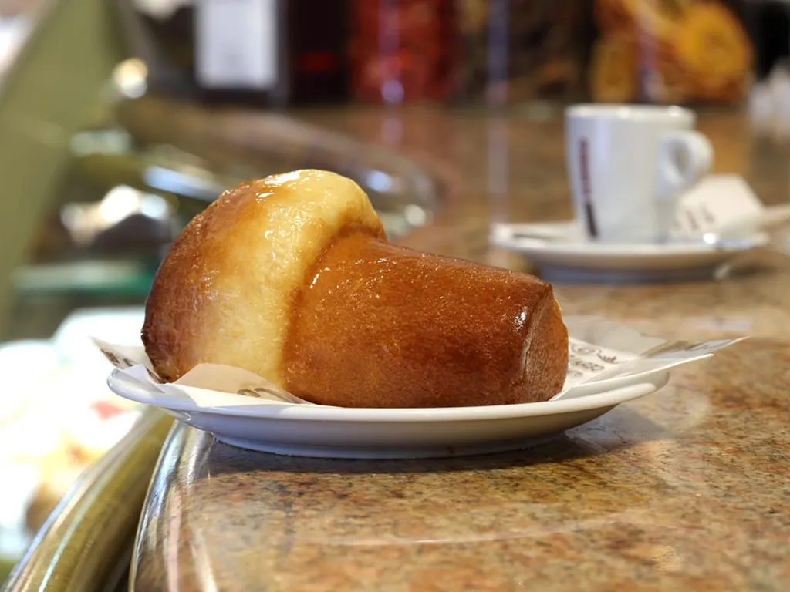

The babà: a Polish king's cake that became Neapolitan
An exiled king, a cake that was too dry, a soak of liqueur. The babà travelled a long way before becoming Neapolitan.

Glossy, soft, swollen with rum syrup. The babà is one of the most Neapolitan sweets there is, and yet it was born far away, at the court of a king without a kingdom.
King Stanislas and the cake that was too dry
Stanislas Leszczyński, the exiled king of Poland, lived in Lorraine, at Lunéville. Tradition says he found the kugelhopf, the yeast cake typical of the region, too dry, and had it soaked in liqueur. A fan of One Thousand and One Nights, he is said to have called it “Ali Baba”.
His pastry chef, Nicolas Stohrer, followed the king's daughter Maria, bride of Louis XV, to Versailles and brought the recipe with him. In Paris the cake became the baba au rhum, soaked in rum.
Arriving in Naples
The babà reached Naples between the late eighteenth and the nineteenth century, with the French cooks of the great families and of the Bourbon court. Neapolitan pastry chefs gave it the mushroom shape we know, a softer dough and a generous soak. From a court dessert it became a street sweet, to be eaten standing at the bar.
A story with several versions
The origins of the babà are told in different ways, and the sources do not always agree. Wikipedia derives it from a yeast cake of Polish and Slavic tradition, the babka, perfected in France; the modern mushroom shape is traced back to 1835. Gambero Rosso says that in Paris the cake lost its saffron and candied fruit and took today's dome shape. The Neapolitan dates differ too: Wikipedia cites Neapolitan sources from 1836, while Gambero Rosso gives the first written record as Vincenzo Agnoletti's manual of 1863, with the cake becoming common among Naples' middle class in the late nineteenth century. A popular etymology links the name to the baba, Turkish dignitaries who accompanied Ottoman ambassadors to Naples: it is a handed-down explanation, not a certainty.
How it is made
The dough is yeasted and bakes for a long time in a truncated-cone mould, until it turns amber. After baking, the babà is left to dry for at least a day, then dipped in a sugar syrup with rum or limoncello and left to drain. Some pastry shops cover it with an apricot glaze. There is also the savarin babà, with a little milk in the dough, lighter and spongier, used for cakes to be filled with cream and fruit.
“Sì nu babà”
In Naples, telling someone “sì nu babà” (“you are a babà”) is an affectionate compliment: it means they are sweet, good, irresistible. It shows how deeply this cake has entered the way the city speaks.
How to enjoy it
The classic babà is simple, just dough and soak. But it lends itself to a thousand variations: with custard and sour cherries, with cream and strawberries, with chocolate, or with limoncello, as a tribute to the Amalfi Coast. According to Gambero Rosso, from the start it was eaten on the move in Naples, like true street food.